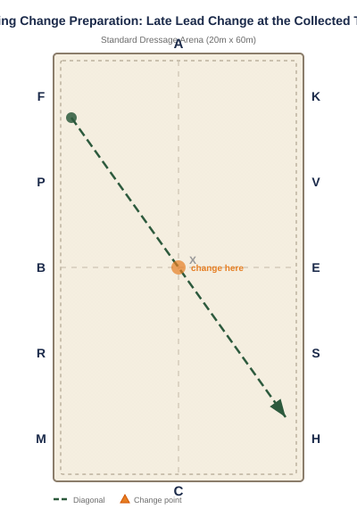

Flying Change Preparation: Late Lead Change at the Collected Trot
Focus: Transitions, Balance, Responsiveness
Equipment: 4 cones or markers
Arena Diagram

Step-by-Step Instructions
This exercise prepares the aids for flying changes without demanding a clean change.
Establish a left-lead collected trot on a 20-meter circle at B.
Ride across the diagonal toward E, maintaining the left lead (counter-collected trot).
At or just before E, ask for a downward transition to collected trot for 1-2 strides, then pick up the right lead.
The goal is to reduce the collected trot strides until the horse eventually changes leads without collected trot.
Start with 3-4 collected trot strides and gradually reduce to 1-2 over multiple sessions.
Don't force the flying change. Let it develop naturally as the horse becomes more balanced and responsive.
Common Mistakes to Avoid
Rushing the exercise and asking for a flying change before the horse is ready.
The horse becoming anxious and running because it senses the rider's urgency.
Not enough preparation in counter-canter, so the horse swaps leads prematurely.
Using a strong, dramatic aid that scares the horse instead of a clear, calm request.
Variations & Progressions
Practice the late change on a figure-eight at X.
Use a ground pole at the change point to help the horse jump into the new lead.
Combine with counter-canter work to build the horse's confidence in holding a lead.
Tip: Flying changes come from preparation, not force. A horse that can do clean simple changes with 1-2 walk/trot strides is ready to attempt flying changes.